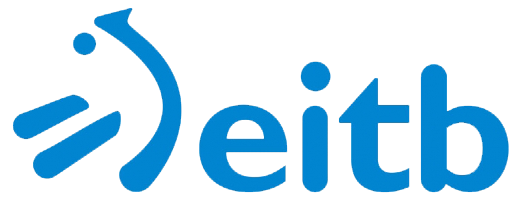
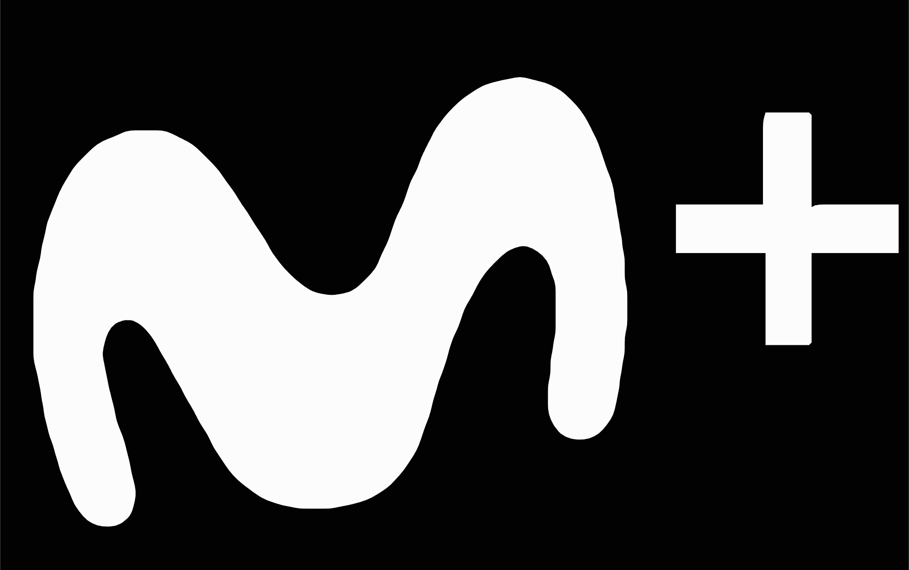
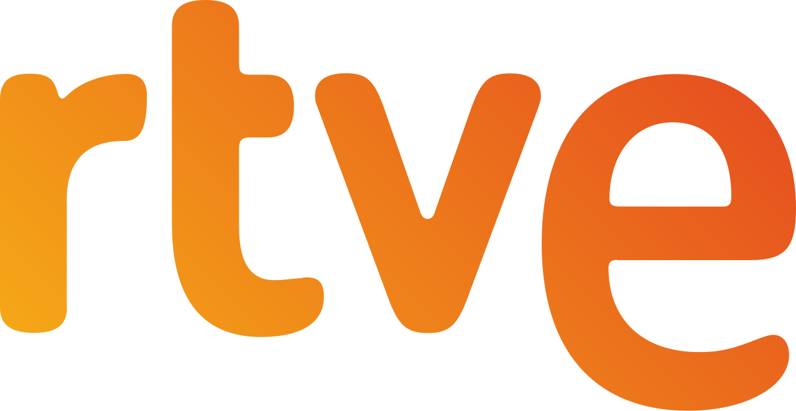
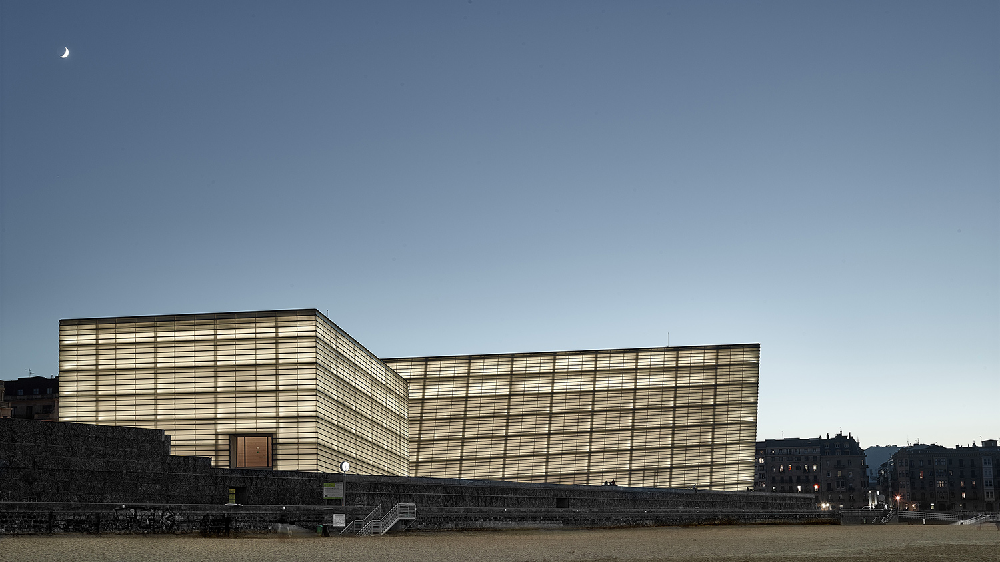
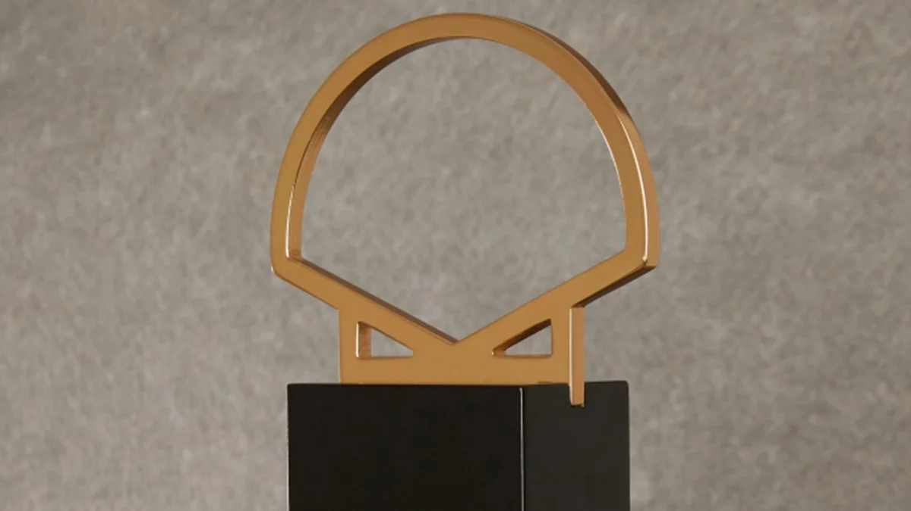
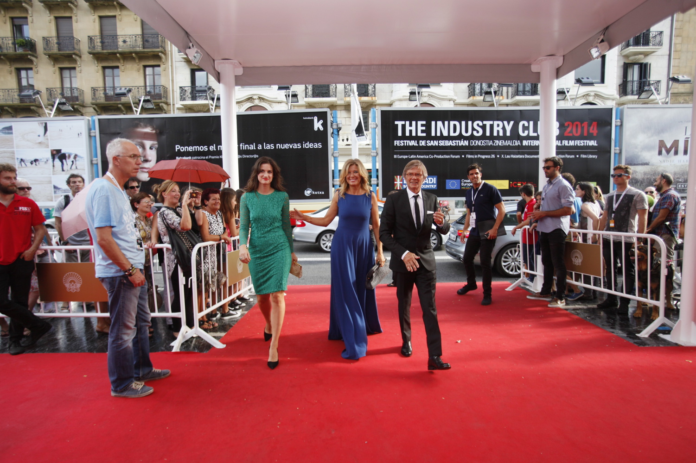
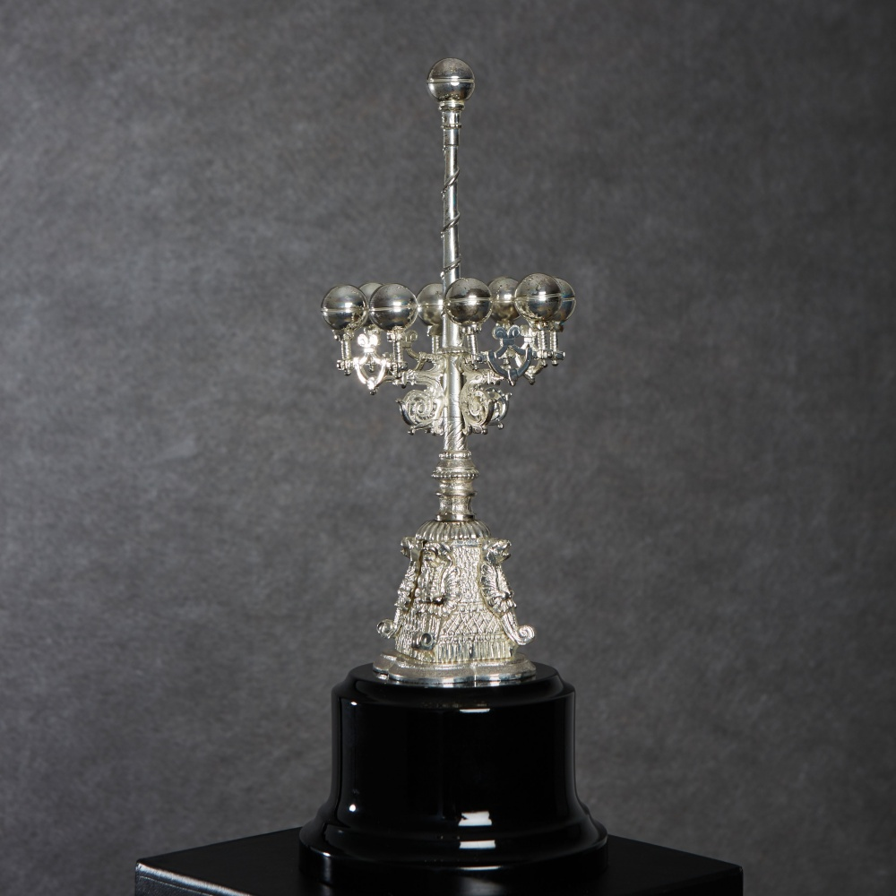
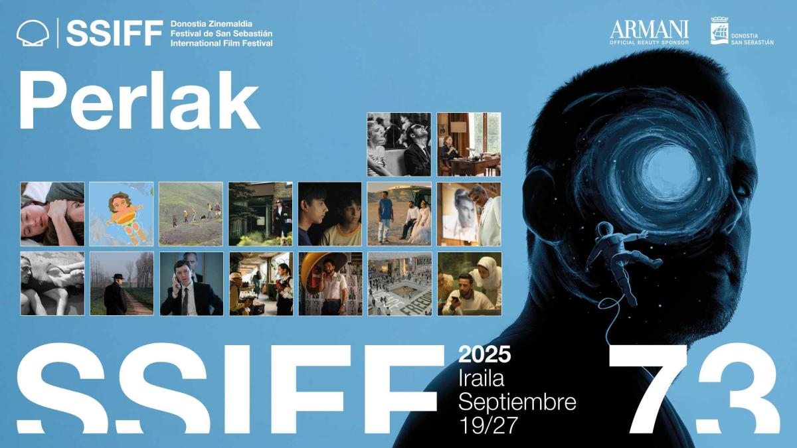
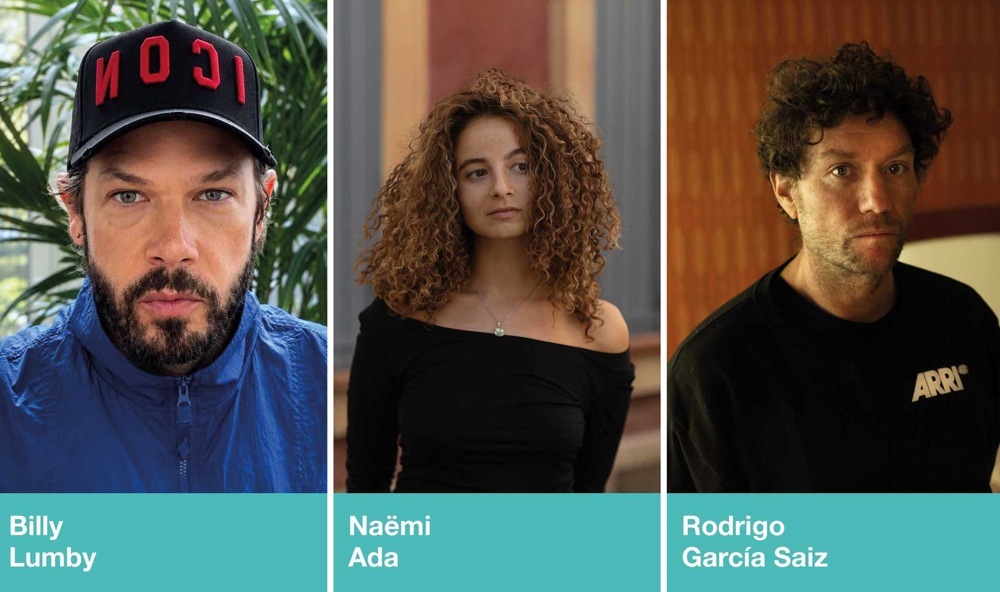
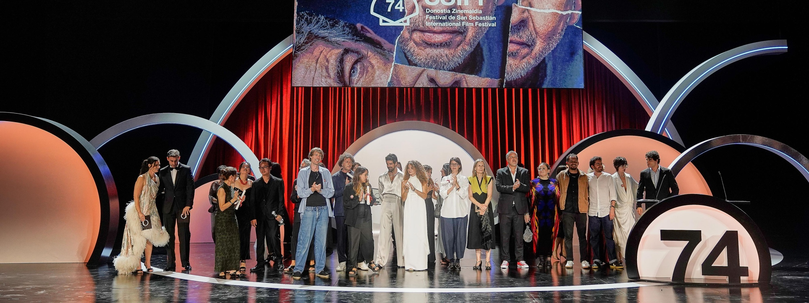

El Festival de San Sebastián celebró su 74.ª edición del 18 al 26 de septiembre de 2026, consolidándose como una de las citas cinematográficas más importantes de Europa. Durante nueve días, Donostia acogió 263 títulos de 47 países, con 17 películas compitiendo por la Concha de Oro en la Sección Oficial. El Kursaal fue la sede principal, acompañado por el Teatro Victoria Eugenia y Tabakalera. Naomi Watts y Werner Herzog recibieron los Premios Donostia, y la Concha de Oro fue para Mike Leigh por "Tender Loving Care".




La sede principal del festival

El gran premio a la mejor película

Estrellas del cine internacional

Homenaje a toda una trayectoria

Lo mejor del cine de autor del año

Talento emergente

El festival en euskera y en la ciudad